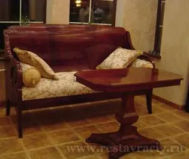
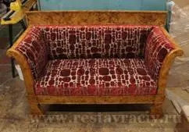
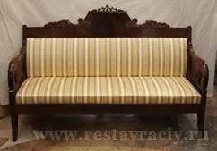
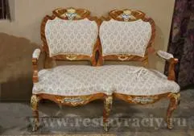
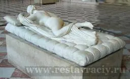
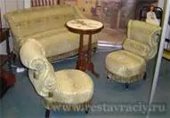

Цены
Цена реставрации дивана
Размер дивана, состояние каркаса, пружин и обивки определяют объём заказа. Крупные деревянные детали можно рассмотреть даже до снятия ткани.


Диван из архива мастерской
Реставрация дивана первой половины XIX века в описанном заказе стоила 120 000 ₽. Работу выполнили примерно за десять лет до публикации этого материала.
У большого дивана с высокой спинкой и валиками оцениваем также состояние пружин и каркаса. Для съёмки важны общий силуэт, дерево и обивка.
Данные мастерской
| Диван | Замена ткани | Ремонт и реставрация дивана | Реставрация с полной разборкой в том числе каркаса. |
|---|---|---|---|
| Плетёный или жесткий деревянный диван без обивки. | 40 т.р. | 50-80 | |
| 2-х местный | 15 т. р. | 50 т.р. | 85-90 т.р. |
| 3-х местный, пружинный | 40 т.р. | 70 т.р. | 100-150 т.р. |
| Кутаный (уточнить размер) | 50 т.р. | 80-100 т.р. | 150-200 т.р. |
О чём рассказывает мастерская
- Признаки серьёзных дефектов мягкой мебели
- Цена реставрации диванов в Москве
- Цена реставрации гарнитура
В материале мастерской
Фотографии и детали



Открыть снимок у мастерской


Открыть снимок у мастерской


Открыть снимок у мастерской


Открыть снимок у мастерской
 Открыть снимок у мастерской
Открыть снимок у мастерской 


Открыть снимок у мастерской
Есть похожая вещь?
Подберите ракурсы для предварительной оценки.